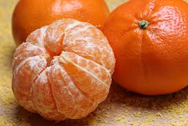

!Sabías que debemos comer 5 raciones de frutas y verduras al día! Las futas, son alimentos naturales que aportan interesantísimos beneficios y propiedades. Poseen una gran diversidad de nutrientes escenciales, son muy ricas en fibra y agua, y además se convierten en una opción ideal a la hora de
La mandarina es una fruta que produce saciedad, aportando pocas calorías. Es muy rica en vitamina C y flavonoides, con importantes funciones antioxidantes, que ayudan a fortalecer el sistema inmune y protegen contra ciertos tipos de
La fresa o frutilla posee acciones antibacterianas, antioxidantes y anticancerígenas, gracias a su elevado contenido en vitamina C, potasio, magnesio y biotina; además de vitamina E, yodo, silicio, fósforo y beta carotenos.
Es muy importante consumirla fresca y con cáscara, para aprovechar mejor todos los nutrientes que nos aporta. Como la vitamina A y C (potentes antioxidantes), el ácido fólico, el hierro, el potasio y la fibra.La manzana ayuda a
Aporta principalmente vitamina A, B1 y C; pero también son fuentes de aminoácidos, potasio, socio, hierro y calcio. Esto hace que se destaque por sus propiedades antiinflamatorias.
Contienen una gran cantidad de vitaminas del complejo B, que protege al aparato cardiovascular, ayuda a evitar la arterioesclerosis y reduce la presión arterial.
Tiene excelentes cantidades de vitaminas (vitaminas A, B1, B2, B3, B6 y C), minerales (yodo, magnesio, manganeso, fósforo y calcio), fibra y enzimas, y agua, que son muy buenas para el sistema digestivo.
Es una fruta que contiene altas cantidades de vitamina C, muy importante para asimilar bien los nutrientes como el hierro; necesarios para mantener y fortalecer la formación de masa magra.
La vitamina C y los beta carotenos presentes en cantidades elevadas en el jugo de toronja actúan como potentes antioxidantes, y favorece la absorción de hierro contenida en los alimentos. Así mismo, tiene una alta cantidad de fibra, que hace que se ralentice el proceso de digestión a porte mayor saciedad.